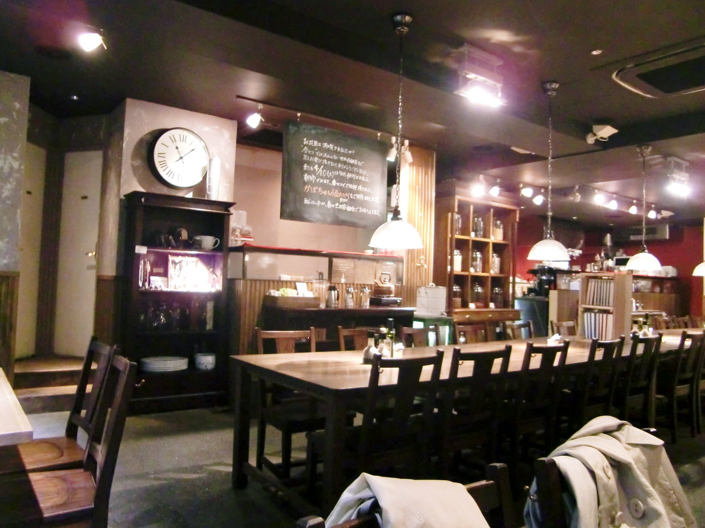
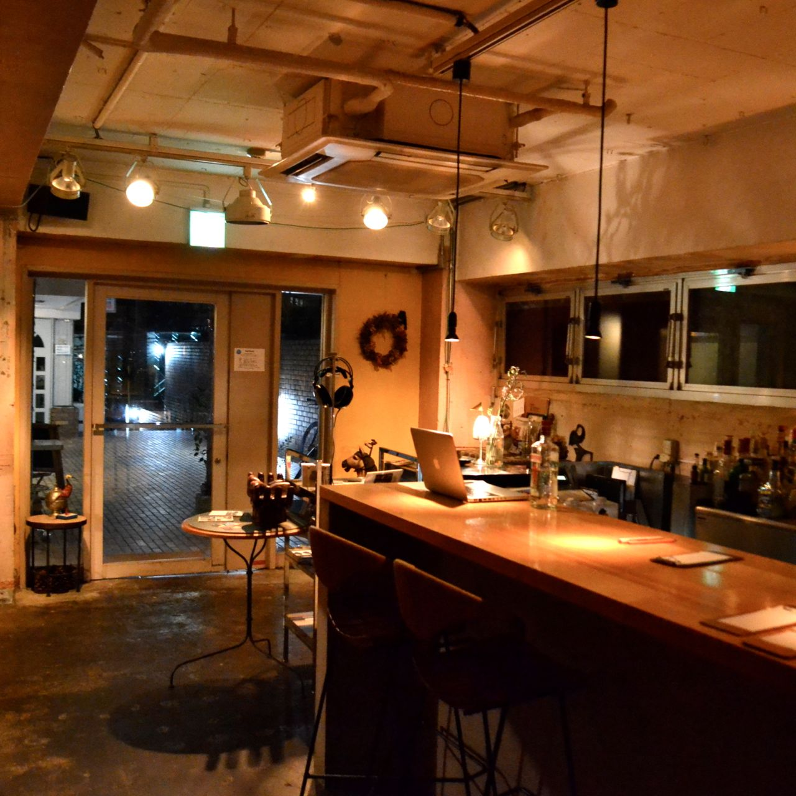
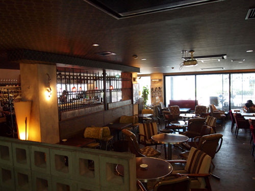
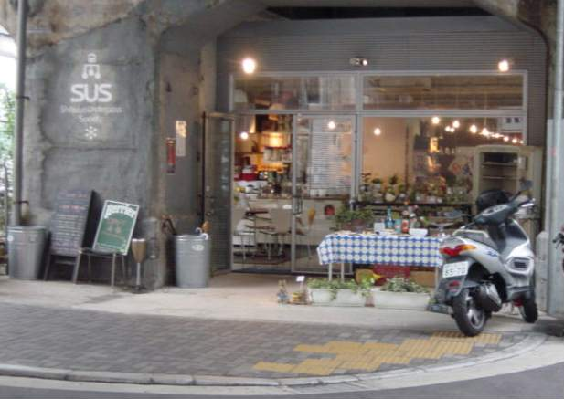

タワーレコードカフェ TOWER RECORDS CAFE
タワレコがリニューアルして２階がカフェになりました。新しいから綺麗です。でも本屋と併設なのでちょっと落ち着きません・・・

Réfectoire / レフェクトワール
TAKEOKIKUCHIビルの３階のカフェ。サンドウィッチが美味しいです。 禁煙。まさに芸術とよぶにふさわしいサンドウィッチをどうぞ！

桜丘CAFE
やぎがいます！メジャーなせいか混んでます。分煙なし。

ANALOG SHIBUYA cafe&lounge
渋谷JACK SPADEの上のカフェ 、意外と狭いです。分煙なし。 2階に上がってお店の入り口までがおしゃれでわくわくします。